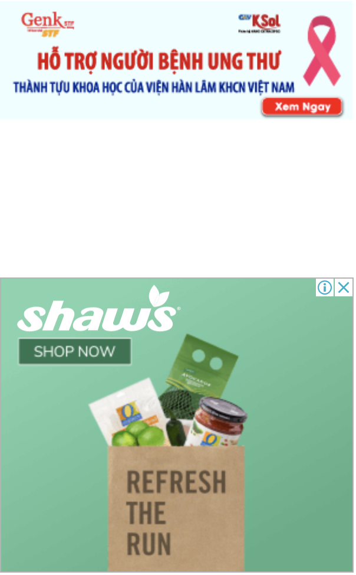

|
"Khả năng còn 4 nguồn dịch khác trong cộng đồng ngoài bốn nguồn hiện tại"
(Dân trí) - Phó Thủ tướng Vũ Đức Đam điểm lại diễn biến 4 nguồn dịch ở Đà Nẵng, Yên Bái, Hải Dương, Bệnh viện K, Bệnh viện Nhiệt đới và lưu ý khả năng còn những nguồn dịch khác trong cộng đồng.
- Nơi nào đang phải cách ly xã hội giãn cách xã hội vì covid 19?
- Hà nội: Những "điểm nóng" covid được phong tỏa và cách ly y tế
|
|
TIN TỨC SỰ KIỆN
- Chủ tịch nước: "Làm chính sách từ cuộc sống, không phải trong phòng lạnh"
- Bí thư Hà Nội: Dập dịch nhưng không phong tỏa cực đoan, "ngăn sông cấm chợ"
- 4 nhân viên Bệnh viện Chợ Rẫy phản ứng nặng khi chích ngừa Covid-19
- Hưng Yên: 2 ca dương tính với SARS-CoV-2 là mẹ con
- Ổ dịch huyện Thuận Thành lớn nhất nước, 90 ca dương tính SARS-CoV-2
- Diễn biến dịch 10/5: Ca nhiễm mới tăng nhanh chưa từng có
- Phó Tổng Giám đốc Công ty Nhật Cường lĩnh 13 năm tù
- Agribank hỗ trợ bệnh viện tuyến đầu phòng chống Covid-19
- Phút cuối đơn độc của người Ấn Độ bên trong lò hỏa táng thời Covid
- CSGT TPHCM nói gì về vụ tài xế lái siêu xe Ferrari bị còng tay?
|

|